My Design Projects
 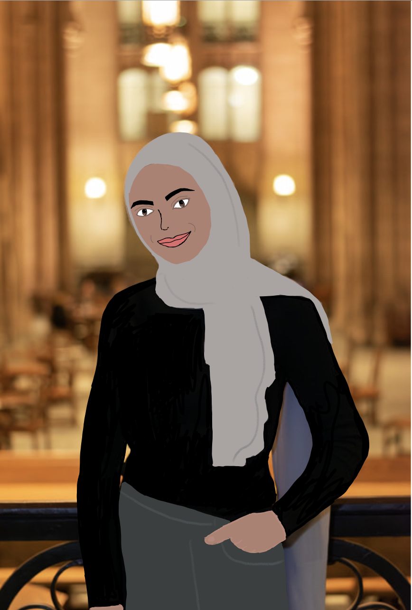
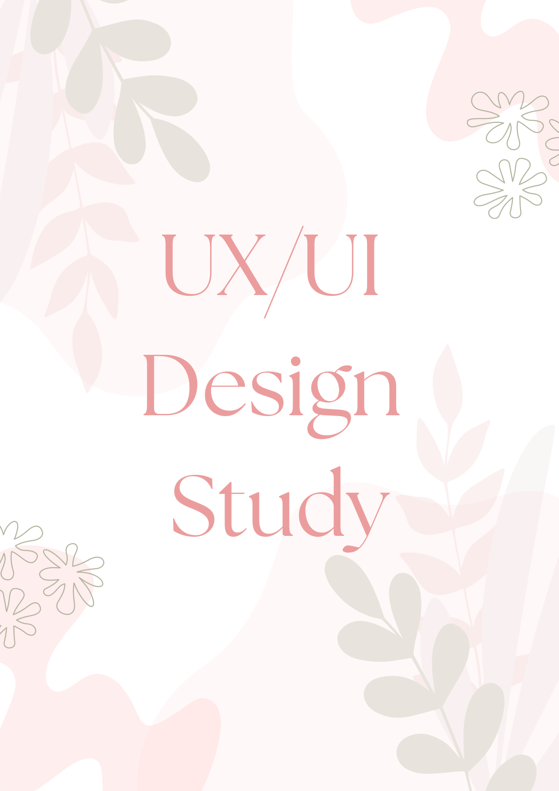
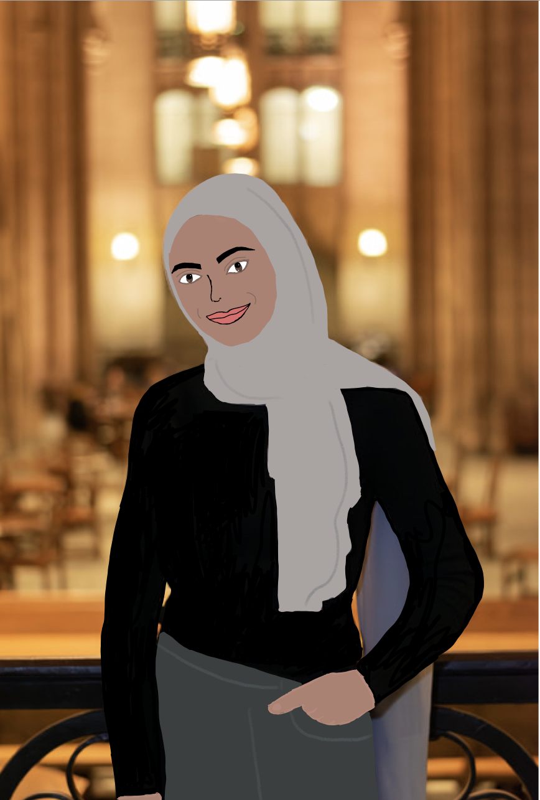
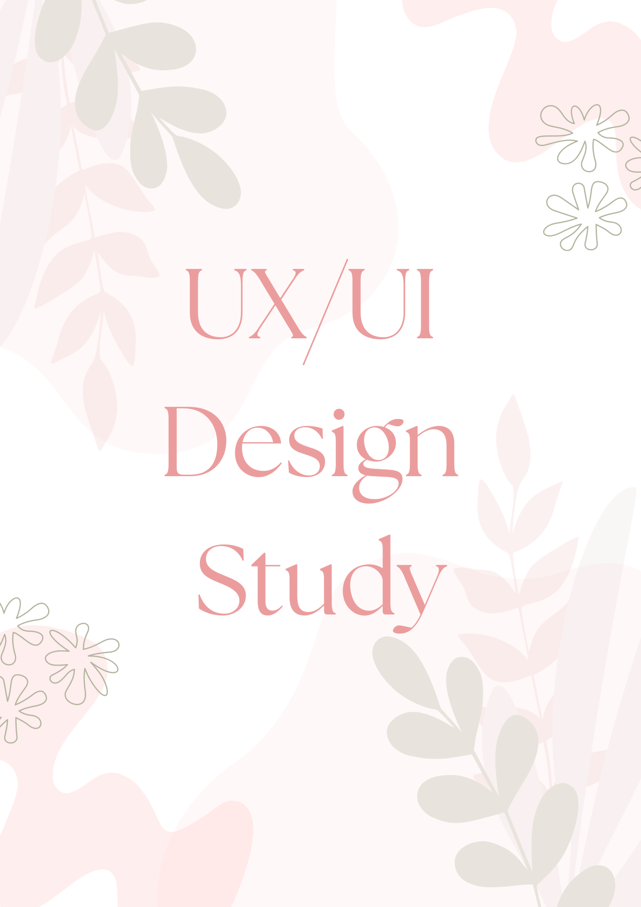
 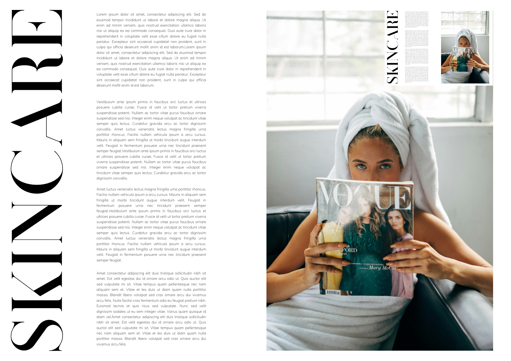
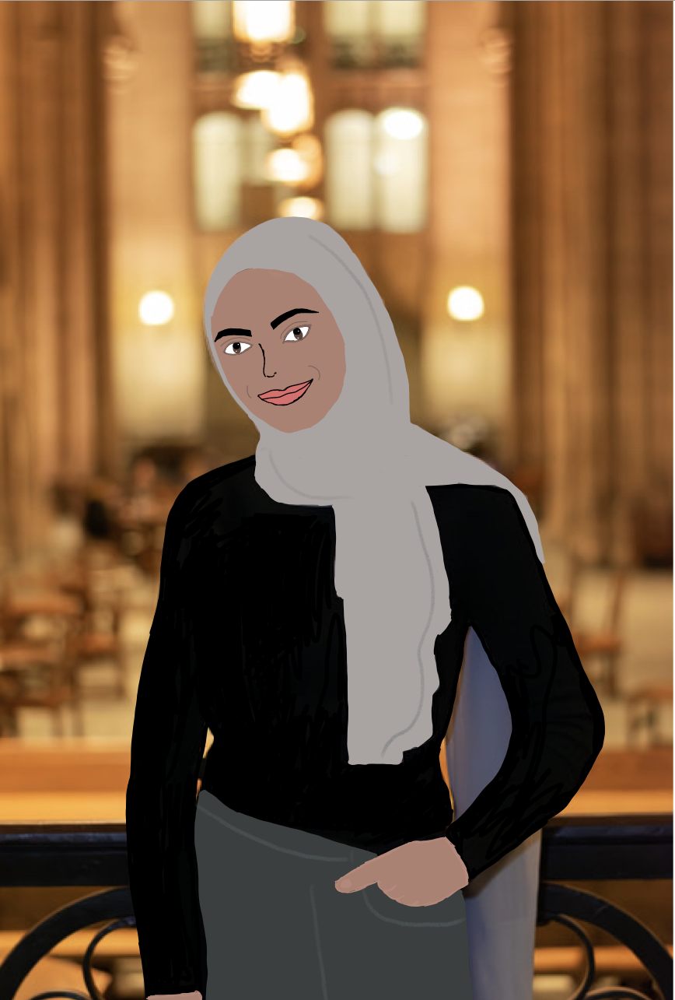
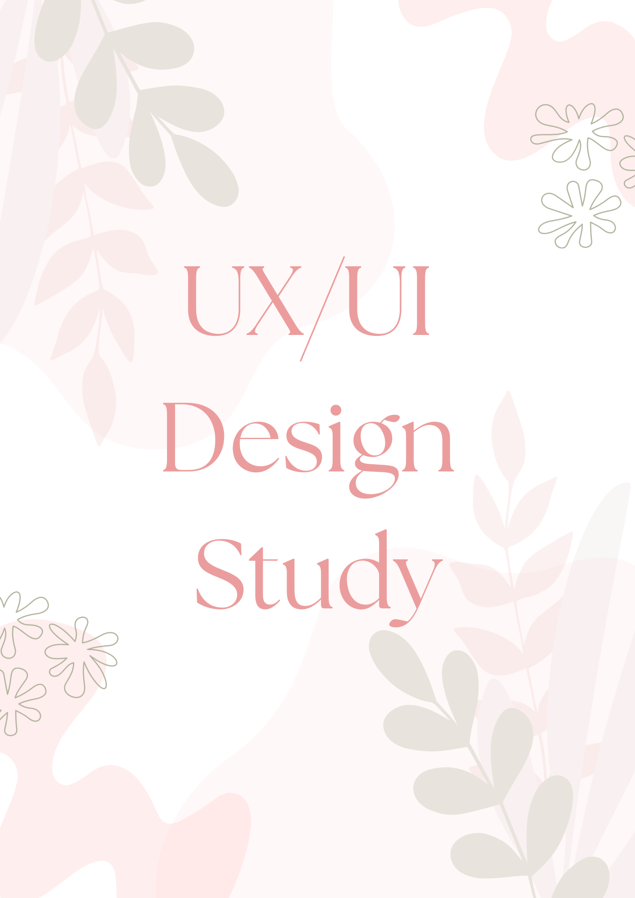
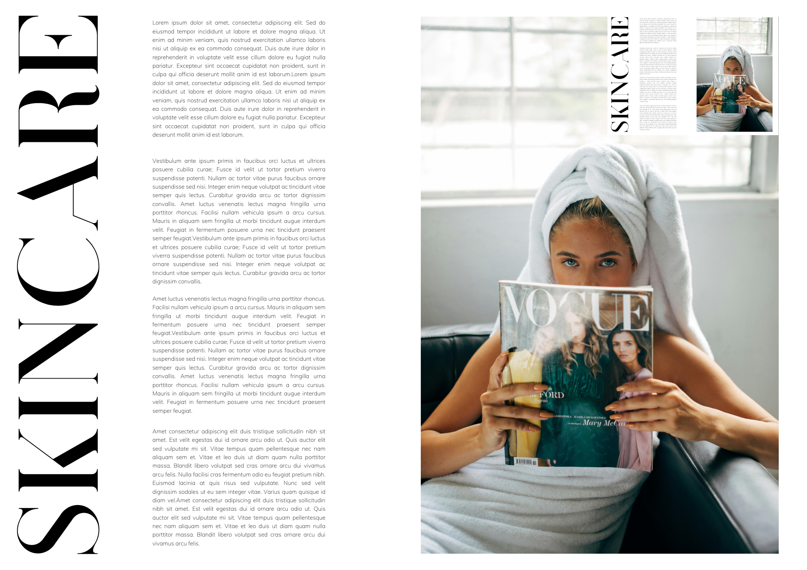
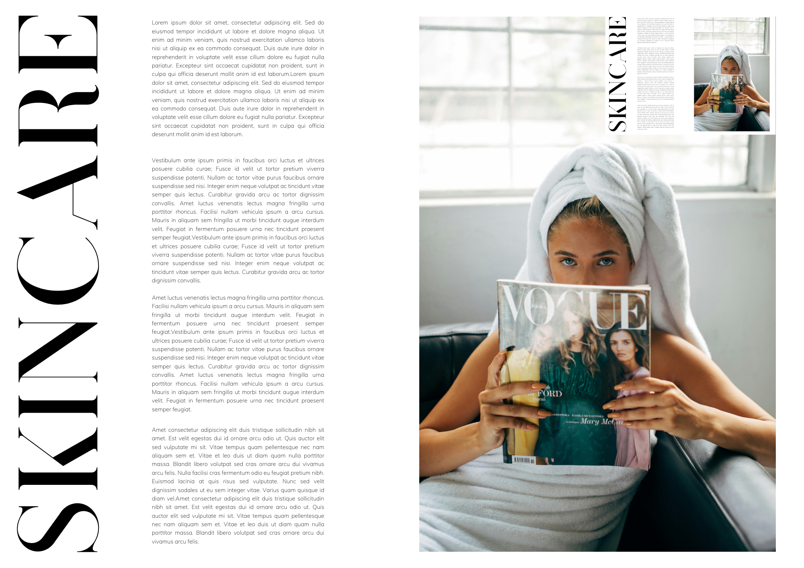
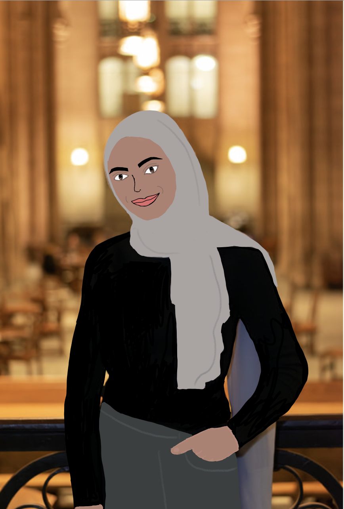
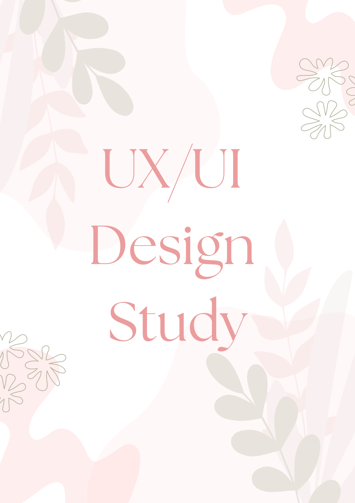
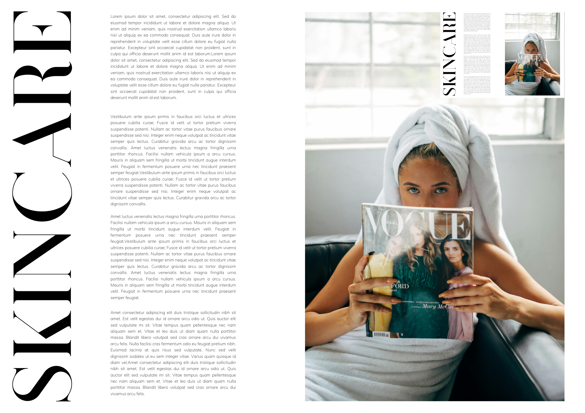
Understand how to use rhetoric to make meaning and create compelling documents. Work with specific software and hardware, thinking broadly about how the media tools we use shape the ways we think and write. Recognize and prioritize inclusive design and accessible design to more effectively write and design for diverse audiences including audiences with disabilities.
Identify and apply common design principles including alignment, balance, contrast, proximity, repetition, and space. This includes learning how to talk about design using these principles.
Workshops take trust. We can learn far more together than we can individually, but to do so we need to establish a mutual respect with others in this space, realizing that learning is a process, and that we are all trying to get there in our own way. That being said, how can you use this time to not only learn from others, but also realize your responsibility in helping others learn?
Each unit begins with a small project and ends with a larger one, so you’ll constantly be working through how to scale ideas up and down, how to pick out the most promising threads in your own work and develop them further. You’ll have opportunities to translate ideas and stories from one medium to another as well, exploring how media form contributes to meaning.
One of the most important things we can do as communicators is to talk about our makings. To not only discuss what we made, but also our praxis—the theory and method behind what we made and how we hope it connects with others. We will do this in oral form, and also through the creation of portfolios.

 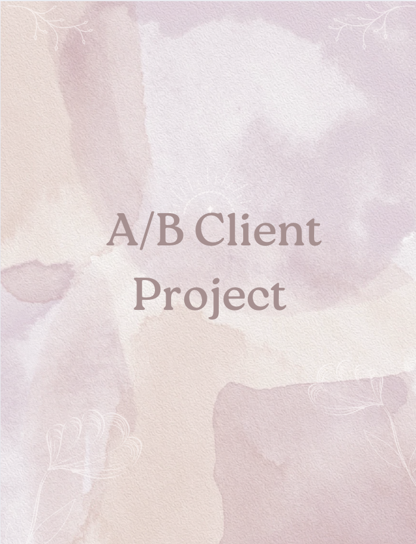
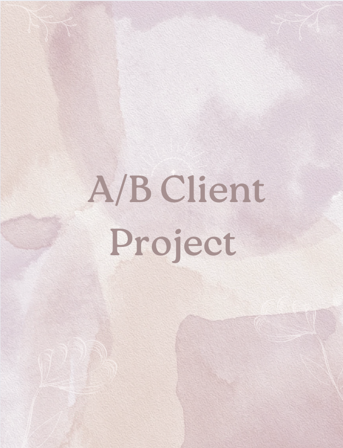
Good Design
This project analyzed effective design principles such as alignment, balance, contrast, and space, showcasing how they contribute to creating impactful visual designs.
Design Resume
This creative resume project applied principles of typography, layout, and design to produce a visually engaging and professional presentation of my skills.
Magazine Ad
This project emphasizes layout design and visual storytelling through a magazine ad or poster. I crafted a balanced composition by integrating 50-100 words of copy with strong visuals, focusing on typography, color, and alignment.